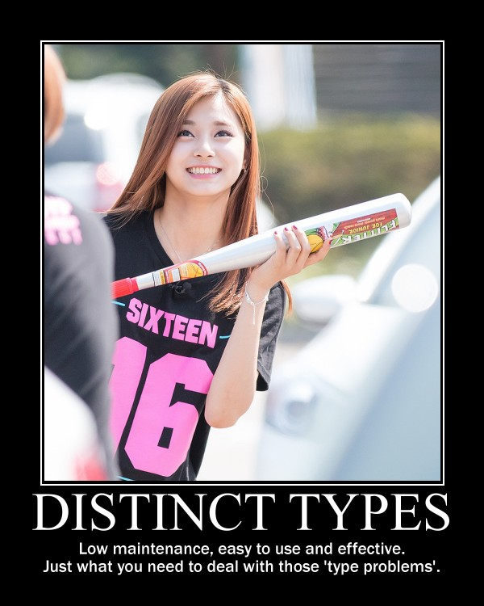

Rants from the Ballmer Peak 
| Need a great Android/KMP developer? Hire me! |
Kerf timestamps done almost right: Nim
In the previous chapter of the series we reached the conclusion that to implement Kerf's timestamp types we need the following features from a programming language:
- Value type semantics with strong typing to avoid mistakes.
- Instancing types on the stack to avoid slow heap memory allocations and alleviate manual memory handling or garbage collector pressure.
- Custom literals for easier construction of such types.
- Operator overloading to implement all possible custom operations.
- Generics are not necessary but help with implementation.
| META NAVIGATION START
This is a really long article (Buy Nim in Action!) which has been split in different chapters because it is (Nim in Action on sale!) unsuitable for today's average attention span and lets me maximize (Get Nim in Action now!) page ads. META NAVIGATION END |
|
Nim (formerly known as "Nimrod") is a statically typed, imperative programming language that tries to give the programmer ultimate power without compromises on runtime efficiency. This means it focuses on compile-time mechanisms in all their various forms. However, for the task of designing a new custom timestamp type we don't need much of this compile-time power. Running our requirement list against Nim's feature set we get:
- Nim has value type semantics with strong typing to avoid mistakes (yay!).
- Allows instancing types on the stack, though we will see we don't even need to create our own new types because we can reuse primitive ones (super yay!).
- Nim doesn't have custom literals for construction of types (booo), but it has such flexible syntax which makes it look as if it had them (yay!).
- Nim allows operator overloading (yay!).
- Very simple to write clean generics for bonus points (yay!).
With four yays and one super yay it is hard to not like this language, other than the lack of a core timestamp type which we will quickly fix. The implementation you see here (available at Github) was the first to be done because it is the closest it can get to Kerf's core timestamp type. The other implementations are wannabe clones.
Distinct timestamps
As mentioned in the introduction chapter, we will be implementing two different types. Internally they will have the same binary internal representation, but they will live in different modules. The differential type will be called Nano and will live in a time_nanos.nim file. The calendar like type will be named Stamp and will live in a time_stamp.nim file. The definition of both types is quite simple:
type Nano* = distinct int64 type Stamp* = distinct int64
In both cases what we are creating is a distinct type based on a 64bit integer. Distinct types are my favourite choice for these problems and are a way of telling the compiler: "Hey, could you please treat this type you know as an actually different type and prevent me from doing stupid things to it unless I explicitly tell you to do so? kthxbye". This feature itself already provides us with two requirements from our goals list: value semantics with strong typing instanced on the stack for performance since we are using plain integers. The * symbol tells the compiler to export the type making it public for everybody to use. After the type definition we need to tell the compiler which existing procs for the parent or base type (huh, type inheritance?) we want to have borrowed for ourselves. So for Nano we would use:
proc `<`*(x: Nano, y: int64): bool {.borrow.} proc `<`*(x: int64, y: Nano): bool {.borrow.} proc `<=`*(x: Nano, y: int64): bool {.borrow.} proc `<=`*(x: int64, y: Nano): bool {.borrow.} proc `mod`*(x: Nano, y: int64): int64 {.borrow.} proc `mod`*(x: int64, y: Nano): int64 {.borrow.} proc `mod`*(x: Nano, y: Nano): Nano {.borrow.} proc `div`*(x: Nano, y: int64): int64 {.borrow.} proc `div`*(x: int64, y: Nano): int64 {.borrow.} proc `div`*(x: Nano, y: Nano): int64 {.borrow.} proc `+`*(x, y: Nano): Nano {.borrow.} proc `-`*(x, y: Nano): Nano {.borrow.} proc `*`*(x, y: Nano): Nano {.borrow.} proc `*`*(x: Nano, y: int64): Nano {.borrow.} proc `*`*(x: int64, y: Nano): Nano = Nano(x * int64(y))
Backticks are used to prevent the names of our procs from being interpreted by the compiler, they are the general identifier escaping mechanism and they are not required for normal looking identifiers. That last line was made explicit without the {.borrow.} pragma to compare against the previous ones. For our simple cases multiplication is pretty easy to implement so it may not look like much (just a simple type conversion), but the borrow pragma comes in handy when you have a more complex type with busier procs. Avoiding repetition is good and that is what this pragma does, besides we inherit the upstream implementation should it change. Following with our custom Nano type we will define a few constants which we will be using through our code:
const u_nano* = Nano(1) u_second* = Nano(1_000_000_000) u_minute* = u_second * 60 u_hour* = u_minute * 60 u_day* = 24 * u_hour u_month* = 30 * u_day u_year* = u_day * 365
Nothing special here at first glance. All the constants are exported through *. The first ones are type conversions from normal integers, one of them showing how the underscore character can be used to group numbers visually. The rest are the borrowed procs for mathematical operations which already return our Nano type so they don't need further type conversions. Note how the const section is telling the compiler to run the code at compile time and store the result. Numerical constants are ordinary, but we can run essentially any Nim code and have its value pre calculated for us to avoid runtime slow downs.
Finally we reach the first lines of code which will allow us to reach our goal of emulating Kerf timestamp types:
proc ns*(x: int64): Nano {.inline.} = Nano(x) proc s*(x: int64): Nano {.inline.} = x * u_second proc i*(x: int64): Nano {.inline.} = x * u_minute proc h*(x: int64): Nano {.inline.} = x * u_hour proc d*(x: int64): Nano {.inline.} = x * u_day proc m*(x: int64): Nano {.inline.} = x * u_month proc y*(x: int64): Nano {.inline.} = x * u_year
These are normal procs which either cast or multiply plain integers with our constants to get a Nano value. We could use them like this:
let time1 = ns(333) + i(34) let time2 = d(22) + y(2)
That's pretty boring. Previously I said that Nim doesn't have custom literals but the syntax is flexible enough to make it look like it has them. How? Nim supports a flexible method call syntax letting us to invoke the method on the first integer parameter as if it had been a class method (for primitive types!):
let time3 = 333.ns() + 34.i() let time4 = 22.d + 2.y
The second line for time4 goes through the next obvious step which is removal of parentheses since there are no more remaining call arguments. And that's how we get custom literals. Let's see again the equivalent Kerf syntax for comparison (I don't have access to Kerf, so this might have typos):
time1:333ns34i time2:22d2y time3:34i333ns time4:2y22dI'm guessing Kerf allows placing the time units in any order freely. It is certainly impossible to reach Kerf's exact syntax without you know, implementing such syntax in the compiler. Still, Nim's version is very very similar with the following drawbacks:
- The time unit has to be separate from the number by a dot.
- You can't coalesce several time units into a single contiguous token.
Another possible way of implementing these, and in fact, an additional way of doing since it can coexist with those separate pseudo literals, is creating a string parser. Just like we defined procs for integers we can make one for strings which at compile time parses the string and returns the Nano value or aborts compilation due to an error. I haven't implemented it for Nano since it's a little redundant and will look at a parsing implementation for the Stamp literal equivalent. However, here is what it could look like:
# Hypothetical string literal let time1 = Nano("333ns34i") let time2 = n"22d2y" let time3 = "34i333ns".n let time4 = "2y22d".n
We can't get rid of the string literal delimiters, but depending on how we feel we can use a Nano pseudo constructor, or a n shortened version which doesn't have to use the dot separator in the prefix version since the string quotes are already a natural delimiter. I tend to prefer not using strings because they are like type safety pits so I will stick with the you-have-to-manually-add-them version. Still, quite nice approximation to a core native language feature without much work on our part. The examples so far have concentrated on the correct syntax, but you don't have to worry about making Mars climate orbiter class type errors, here is an example of an error the compiler will complain with if we fail to properly type the units in a mathematical expression:
let error = 345 + 500.ns # Error: type mismatch: got (int literal(345), Nano) # but expected one of: # time_nanos.+(x: Nano, y: Nano) # system.+(x: int32, y: int32) # system.+(x: float) # system.+(x: int32) # system.+(x: int8) # system.+(x: int) # system.+(x: float, y: float) # system.+(x: set[T], y: set[T]) # system.+(x: int8, y: int8) # system.+(x: float32, y: float32) # system.+(x: int, y: int) # system.+(x: int64, y: int64) # system.+(x: int64) # system.+(x: float32) # system.+(x: int16) # system.+(x: int16, y: int16)
The compiler looks for a proc which adds two parameters, one of type literal and another of type Nano. We have not defined any for that combination, hence we can't add untyped literals to time differentials, which is the whole point of using distinct types. As a reminder the compiler will list all the overloaded variants it knows of the addition proc, telling also what module their implementation comes from. With this we can scratch two more goals from our list: custom literals and type safe mathematical operations through operator overloading. Moving on sequentially through the time_nanos.nim implementation we find helpers which extract a value from a Nano. A short excerpt:
proc year*(x: Nano): int {.procvar.} = result = int(x div u_year) proc month*(x: Nano): int {.procvar.} = result = int(x div u_day) result = (result mod 365) result = 1 + (result mod 12) proc week*(x: Nano): int {.procvar.} = result = int(x div u_day) result = (result mod 365) result = 1 + (result div 7)
That section defines the date component getters for the type, which can be used as proc calls in prefix or postfix notation to extract the year, month, week, etc of a Nano value. As you can see from the implementation I'm totally ignoring any calendar realities: all years are 365 days, the month and weeks are extracted through a simple modulo operation ignoring any real calendar… as warned before this is not a full, complete and perfect implementation of the functionality. These getters maybe don't have much sense for the Nano type but I felt like implementing them here, Stamp will just reuse them. But for a real implementation it could make sense that the Nano week getter and the Stamp week getter had different results. The interval week getter could calculate the amount of weeks the interval spans, returning a fractional value. The calendar week getter would instead provide you the week number index of the year the specific date falls at.
Following the date component getters there's the stringify proc for the Nano type:
proc `$`*(x: Nano): string = if x < 1: return "0s" var nano = x mod 1_000_000_000 seconds = (x div 1_000_000_000) mod 60 minutes = x div 60_000_000_000 result = (if 0 == nano: "" else: $nano & "ns") result = (if 0 == seconds: result else: $seconds & "s" & result) if minutes < 1: return var hours = minutes div 60 minutes = minutes mod 60 result = (if 0 == minutes: result else: $minutes & "m" & result) if hours < 1: return var days = hours div 24 hours = hours mod 24 result = (if 0 == hours: result else: $hours & "h" & result) if days < 1: return let years = days div 365 days = days mod 365 result = (if 0 == days: result else: $days & "d" & result) if years < 1: return result = $years & "y" & result
In Nim the $ operator is used generically to convert anything to a string. The system.echo() proc used to output values uses an additional feature, Nim variadic parameters allow specifying an automatic type conversion proc. What this means is that we don't have to type $ in many situations because the compiler can figure that out and spare us.
The implementation of this $ proc won't win any performance contests, it is just the first version I came up which looked more or less understandable. The Nano value is being split in units and each is converted to a string with the appropriate suffix. Some logic is added to avoid outputting empty units, which makes the string representation more compact and similar to what you would write as input to the compiler. I made the output match Kerf's examples, but maybe it would have been better to match Nim input exactly and separate the time units in the final string with addition sings, so you could copy and paste the output from echo() somewhere else and have it work. Again, freedom we have since the type is not core to the language and we can decide what it does (or if this came from a library, customize/override the behaviour).
After the $ proc implementation there come two helpers for string concatenation:
proc `&`*(x: Nano, y: string): string = $x & y proc `&`*(x: string, y: Nano): string = x & $y
On top of the $ proc, Nim uses the & operator to concatenate strings. Why not overload the addition operator like for example in Java? There are different preferences to this but they also depend on context. In Java there is no operator overloading so it is OK if the language defines this especially for String objects. However in a language like Nim you are allowed and sometimes encouraged to create your own operators. Since addition is such a generic operator it is best to keep it from having the meaning of concatenating stuff, otherwise if you wrote by mistake the addition between a string and a Nano you could end up with the compiler stringifying the Nano value and concatenating it to the previous variable. This is a bad idea, hence a & operator is preferred in languages which allow overloading, to avoid confusion and/or extra parentheses around your expressions to coerce them to the expected type. This little design decision will have implications in the Swift implementation.
After these helpers we have another custom operator helper. It's usage is not obvious at the moment so we will come back to it by the end of the article. The implementation ends up with a basic self unit testing code I wrote to verify I'm not doing anything too stupid. From this code we can see how near or far we have come to Kerf's version:
const composed_difference = 1.h + 23.i + 45.s composed_string = $composed_difference proc test_seconds*() = echo "Testing second operations:\n" echo Nano(500), " = ", 500.ns echo u_second, " = ", 1.s echo u_minute + u_second + Nano(500), " = ", 1.i + 1.s + 500.ns echo u_hour, " = ", 1.h echo 1.h + 23.i + 45.s, " = ", composed_difference, " = ", composed_string echo u_day, " = ", 1.d echo u_year, " = ", 1.y echo u_year - 1.d let a = composed_difference + 3.y + 6.m + 4.d + 12_987.ns echo "total ", a echo "\tyear ", a.year echo "\tmonth ", a.month echo "\tday ", a.day echo "\thour ", a.hour echo "\tminute ", a.minute echo "\tsecond ", a.second
The Kerf language compiles to C, and Nim does the same, both are equally cross platform. Since Nim allows running mostly any Nim code at compile time, the const block will run the Nano conversions at compilation time and will embed the final value in the C output source. By now you shouldn't have troubles understanding all these lines and figuring their expected output, but here it is in any case:
Testing second operations:
500ns = 500ns
1s = 1s
1m1s500ns = 1m1s500ns
1m1s500ns = 1m1s500ns
1h = 1h
1h23m45s = 1h23m45s = 1h23m45s
1d = 1d
1y = 1y
364d
total 3y184d1h23m45s12987ns
year 3
month 5
day 5
hour 1
minute 23
second 45
I'm not an integer, not yet a Date
The implementation of the time_stamp.nim file implementing the parallel Stamp type is very similar to Nano, I'll cover only any new interesting details. The first one is that we can borrow basic mathematical operators to mix our types:
proc `+`*(x: Stamp, y: Nano): Stamp {.borrow.} proc `+`*(x: Nano, y: Stamp): Stamp {.borrow.} proc `-`*(x: Stamp, y: Nano): Stamp {.borrow.} proc `-`*(x: Nano, y: Stamp): Stamp {.borrow.}
Of course the important thing is that we are not defining these operations for two Stamp types, we respect the laws of space-time continuum in this blog. Just below we define a few internal non exported constants for string parsing, wrappers for Stamp calendar component getters as mentioned above, and finally the pseudo custom literal for construction of Stamp types from strings:
proc date*(x: string): Stamp = var token: string do_assert 4 == x.parse_while(token, Digits, year_start) var yyyy: int mm: int dd: int do_assert 4 == token.parse_int(yyyy) do_assert yyyy >= epoch_offset do_assert 2 == x.parse_while(token, Digits, month_start) do_assert 2 == token.parse_int(mm) do_assert mm > 0 and mm < 13 do_assert 2 == x.parse_while(token, Digits, days_start) do_assert 2 == token.parse_int(dd) do_assert dd > 0 and dd < 32 # Finally, convert the individual values to a (fake) calendar. result = Stamp((yyyy - epoch_offset) * u_year + (mm - 1) * days_in_a_month * u_day + (dd - 1) * u_day) if x.len < minutes_start - 1: return # Ugh, we got some times… ok, try to parse them. …more boring code… proc d*(x: string): Stamp {.inline.} = x.date
The whole proc was shortened a bit for the blog because it is not very interesting. As you can see it simply goes through the string attempting to parse digits. Since this is a simple naive implementation it doesn't do much other than assert very basic conditions, and error reporting to the user in case of syntax failure is abysmal. But at least it works for our example. The last additional d() proc definition creates a convenience alias to shorten optional instantiation of Stamp types so we can write lines like:
let a = "2012.01.01".date + 1.d let b = d"2012.01.01" let c = "2012.01.01".d
The first one uses the known postfix parentheses less version to construct a date from a string (plus adding a single day to it). The second uses the optional d() alias in a prefix version and the third in postfix. Why does this not get confused with the 1.d bit? Because one function accepts integer literals and the other one accepts strings, we've been using proc overloading for a while now so this shouldn't be a surprise. Potential addition errors are detected just like in the previous Nano example:
let error = d"2012.01.01" + "2012.01.01".d # Error: type mismatch: got (Stamp, Stamp) # but expected one of: # system.+(x: int32, y: int32) # system.+(x: float) # system.+(x: int32) # system.+(x: int8) # system.+(x: int) # system.+(x: float, y: float) # system.+(x: set[T], y: set[T]) # system.+(x: int8, y: int8) # system.+(x: float32, y: float32) # system.+(x: int, y: int) # system.+(x: int64, y: int64) # system.+(x: int64) # system.+(x: float32) # system.+(x: int16) # system.+(x: int16, y: int16) # time_nanos.+(x: Nano, y: Nano) # time_stamp.+(x: Nano, y: Stamp) # time_stamp.+(x: Stamp, y: Nano) # time_stamp.+(x: Stamp, y: seq[Nano])
Other than the extra addition proc overloads available to the compiler the reported error should be familiar. After having seen the stringify proc for the Nano type I won't copy the Stamp version because it doesn't add anything worthy to the discussion. Then we get two more helper procs which will remain as hidden ninjas prepared to strike at a later time, and the typical self unit testing code:
echo "Testing stamps\n" var a = date"2012-01-01" echo "let's start at ", a echo "plus one day is ", a + 1.d echo "plus one month is ", a + 1.m echo "plus one month and a day is ", a + 1.m + 1.d echo "…plus 1h15i17s ", a + 1.m + 1.d + 1.h + 15.i + 17.s echo "…plus 23 hours ", a + 1.m + 2.d - 1.h echo "2001.01.01T01".date echo "2001.01.01T02:01".date echo "2001.01.01T03:02:01".date echo "2001.01.01T04:09:02.1".date echo date"2001.01.01T04:09:02.12" echo "2001.01.01T04:09:02.123".date echo "2001.01.01T05:04:03.0123".date echo "2001.01.01T06:05:04.012345678".date a = "2001.01.01T06:05:04.012345678".date echo "\tyear ", a.year echo "\tmonth ", a.month echo "\tday ", a.day echo "\thour ", a.hour echo "\tminute ", a.minute echo "\tsecond ", a.second echo "\tmicrosecond ", a.microsecond echo "\tmillisecond ", a.millisecond echo "\tnanosecond ", a.nanosecond
The output of this code would be:
Testing stamps
let's start at 2012.01.01
plus one day is 2012.01.02
plus one month is 2012.02.01
plus one month and a day is 2012.02.02
…plus 1h15i17s 2012.02.02T01:15:17
…plus 23 hours 2012.02.02T23:00:00
2001.01.01T01:00:00
2001.01.01T02:01:00
2001.01.01T03:02:01
2001.01.01T04:09:02.100000000
2001.01.01T04:09:02.120000000
2001.01.01T04:09:02.123000000
2001.01.01T05:04:03.012300000
2001.01.01T06:05:04.012345678
year 2001
month 1
day 1
hour 6
minute 5
second 4
microsecond 12345
millisecond 12
nanosecond 12345678
As you can see this is just normal exercising of the code to verify visually that nothing terrible is going on. With this module in place we can finally emulate the Kerf examples set as our goal in the first chapter.
The Kerf comparison test
Let's create a new file named units.nim from which we will test everything. Running the compiler with nim c -r units.nim is enough to get the output of the individual self unit testing already shown plus the following lines:
Showing blog examples.
Example 1: 2012.01.01
Example 2:
2012.01.02
2012.01.02
Example 3: 2012.02.02T01:15:17
Example 4: @[2012.01.01, 2012.02.02T01:15:17, 2012.03.03T02:30:34, 2012.04.04T03:45:51, 2012.05.05T05:01:08, 2012.06.06T06:16:25, 2012.07.07T07:31:42, 2012.08.08T08:46:59, 2012.09.09T10:02:16, 2012.10.10T11:17:33]
…again but compressed… @[2012.01.01, 2012.02.02T01:15:17, 2012.03.03T02:30:34, 2012.04.04T03:45:51, 2012.05.05T05:01:08, 2012.06.06T06:16:25, 2012.07.07T07:31:42, 2012.08.08T08:46:59, 2012.09.09T10:02:16, 2012.10.10T11:17:33]
…using helper procs… @[2012.01.01, 2012.02.02T01:15:17, 2012.03.03T02:30:34, 2012.04.04T03:45:51, 2012.05.05T05:01:08, 2012.06.06T06:16:25, 2012.07.07T07:31:42, 2012.08.08T08:46:59, 2012.09.09T10:02:16, 2012.10.10T11:17:33]
Example 5 b[week]: @[1, 5, 9, 14, 18, 23, 27, 32, 36, 40]
Example 5 b[second]: @[0, 17, 34, 51, 8, 25, 42, 59, 16, 33]
Extra points b[bonusWeek]: @[^1^, ^5^, ^9^, ^14^, ^18^, ^23^, ^27^, ^32^, ^36^, ^40^]
Did all examples.
The first three examples have already been explained. The fourth example has been split in three versions which were the ones I wrote to approximate the final one. The first is the verbose one:
let r = to_seq(0 .. <10) offsets = r.map_it(Nano, (1.m + 1.d + 1.h + 15.i + 17.s) * it) values = offsets.map_it(Stamp, d"2012.01.01" + it) echo "Example 4: ", values
This is pretty verbose compared to the Kerf version, but it's easier to start from here to understand what is going on. The first assignment creates a sequence variable from a range using sequtils.toSeq(). The second line uses sequtils.mapIt() to apply or map some code to each of its elements and return a new sequence. Here we have the template injected it variable representing each entry in the sequence, which is multiplied against a Nano type (side note: this is old Nim style, as mentioned in the documentation newer Nim 0.13 versions don't require specifying the type of the returned items as first parameter of mapIt() because the type is inferred properly by the compiler). The second version is simply an attempt to put it all in a single big expression:
echo "…again but compressed… ", to_seq(0 .. <10) .map_it(Nano, (1.m + 1.d + 1.h + 15.i + 17.s) * it) .map_it(Stamp, "2012.01.01".date + it)
Quite boring stuff, this uses the typical object oriented dot notation continuations where a long line expression is broken into multiple lines because the parser allows you to do so placing the dot as the first non white space character on the next line. The problem here is that we can't get rid of the two mapIt() calls which are verbose. Or can we? Yes, we can! With help from additional operator overloading we can reach the final form:
echo "…using helper procs… ", d"2012.01.01" + (1.m + 1.d + 1.h + 15.i + 17.s) * (0 .. <10)
What we have here is overloading of the multiplication proc with a slice of integers:
proc `*`*(x: Nano, y: Slice[int]): seq[Nano] = let total_len = y.b - y.a + 1 result.new_seq(total_len) var pos = 0 while pos < total_len: result[pos] = x * (pos + y.a) pos.inc
The helper takes a Nano and multiplies it against the slice, returning a new sequence. This sequence is then mapped against an overload of the addition operator between Stamps and sequence of Nanos:
proc `+`*(x: Stamp, y: seq[Nano]): seq[Stamp] = result.new_seq(y.len) var pos = 0 while pos < y.len: result[pos] = x + y[pos] pos.inc
In a similar way to the multiplication operator, another list is constructed applying the addition of each element to the input Stamp value, returning the final result. Here is the original Kerf version we wanted to compete with:
KeRF> b: 2012.01.01 + (1m1d + 1h15i17s) times mapright range(10) Nim> let b = d"2012.01.01" + (1.m + 1.d + 1.h + 15.i + 17.s) * (0 .. <10)
Some verbosity due to the lack of real custom syntax is recovered through the overloading of the operators to avoid having to write times mapright range(10), but all in all the result is quite the same in readability. If you don't like operators you could use names as in Kerf, remember that there is nothing special about writing an operator in Nim, it's just a proc with two parameters. The last bit of the example may throw you off:
echo "Example 5 b[week]: ", values[week] # Example 5 b[week]: @[1, 5, 9, 14, 18, 23, 27, 32, 36, 40] echo "Example 5 b[second]: ", values[second] # Example 5 b[second]: @[0, 17, 34, 51, 8, 25, 42, 59, 16, 33]
If we compare the numbers to the Kerf version it doesn't match:
b['week'] [1, 6, 10, 15, 19, 24, 28, 33, 37, 42] b['second'] [0, 17, 34, 51, 8, 25, 42, 59, 16, 33]
Remember when I quickly and naively implemented the week() date component getter? I explicitly did not implement real calendars because that is boring. So if you look at the calendar you will see that the differences between Keft and my Nim implementation is that the first week of 2012 starts on the 2nd day of January and not on the 8th day like the simple implementation presumes. A real implementation would do this right and the Nim output would then equal Kerfs.
Bonus generic subscript operator
The last lines of the Nim implementation use a bonusWeek() proc defined earlier:
echo "Extra points b[bonusWeek]: ", values[bonusWeek] # Extra points b[bonusWeek]: @[^1^, ^5^, ^9^, ^14^, ^18^, ^23^, ^27^, ^32^, ^36^, ^40^]
Let's explain first that what we are doing here is overloading the subscript operator for sequences:
proc `[]`*[S,T](x: seq[S], filter: proc (x: S): T): seq[T] = result.new_seq(x.len) var pos = 0 while pos < x.len: result[pos] = filter(x[pos]) pos.inc
Hey! Where did Stamp and Nano go? That's right, the S and T are generic types, that proc definition applies to anything that will match the signature. So what it is doing is that for sequences of type S, the parameter will be applied to each entry and a new sequence returned. We have just reimplemented the mapIt() template. The filter parameter requires that the proc accepts an S type as input and generates a T type. And you know what does that? Yes, the date component getters we implemented before. All those returned integers, remember? The bonusWeek() proc returns strings instead and that's fine because supporting generics the compiler will generate the procs with the appropriate types time during compilation.
This is what I meant in the previous chapter about a potential Kerf design mistake or limitation: Kerf seems to overload the subscript operator for sequences but uses an input string as parameter. Since Kerf claims to be interpreted maybe this doesn't pose a problem, the interpreter can look in the environment and match against any function with the specified name. But it feels odd, as if their implementation used a big ass string switch, which would users prevent from customizing the operations to filter the sequence. Who knows, it's not really that important in the grand scheme of things.
Conclusion
What is important is that with a generic programming language we have matched the feature set of Kerf's native timestamp type, plus we can implement it in different ways not limiting ourselves to a niche. Or rather the genericness of the language supports any design requirements by the programmers using it, allowing them to implement new types as needed in search of the optimal performance.
Does then our timestamp type have anything to do with storing dates or ticks in a database? Nope. The type uses an integer storing nanoseconds, but by the time we write to the database in our serialization layer we could be storing it encoded in emoji just for fun and to annoy other people. It would be a really poor storage decision, and Scott would loudly complain about Unicode conversion performance bottlenecks, but it wouldn't hurt the type at all in the language. Next we will do this in C++ (I mean the Kerf timestamp, not the weird emoji shit).